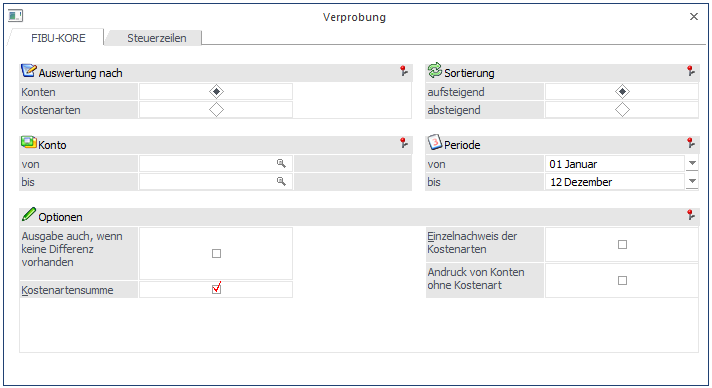
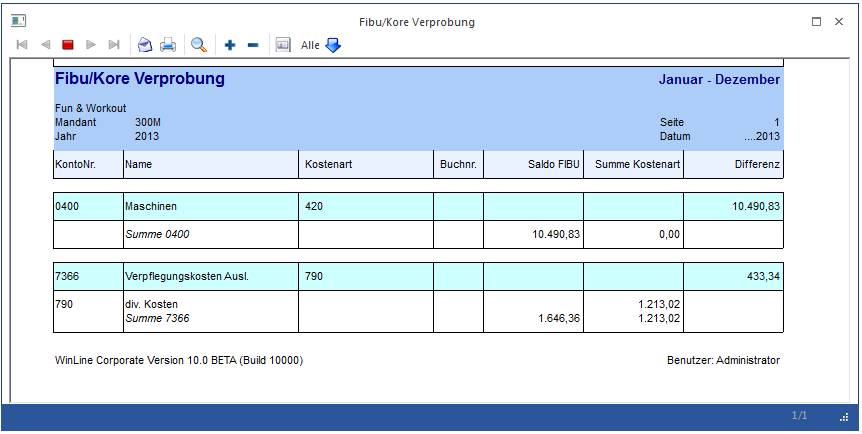

Im Menüpunkt
1 Auswertungen
1 Verprobung
können Sie im Register FIBU-KORE die Werte der FIBU mit den gebuchten Kosten/Erlösen aus der WinLine KORE abgleichen.

Ø Auswertung nach
ü Konten
Pro Konto wird die Summe
der bebuchten Kostenarten und die Differenz zum FIBU-Saldo ausgewiesen.
ü Kostenarten
Pro Kostenart
werden die entsprechenden FIBU-Konten aufgelistet.
Ø Konto / Kostenart von - bis
Je nach Auswertung (Konto oder Kostenart) kann hier durch Eingabe eines Bereichs die Verprobung auf diesen Konten- oder Kostenartenbereich eingeschränkt werden.
Ø Sortierung
Die Sortierung der Ausgabe kann aufsteigend oder absteigend erfolgen.
Ø Periode
Aus der Combobox können Sie eine Buchungsperiode auswählen.
Ø Ausgabe
Wahlweise kann die Ausgabe am Bildschirm oder Drucker erfolgen.
Ø Selektion
Je nachdem, ob die Auswertung nach Konten oder Kostenarten erfolgt, gibt es unterschiedliche Selektionsmöglichkeiten. Diese können einzeln oder gemeinsam aktiviert werden.
Auswertung nach Konten:
Ø Selektion
ü Keine Selektion
Es werden pro
FIBU-Konto nur die Differenzen angegeben, die sich beim Vergleich der Summe der
Journalzeilen in der KORE (in denen das jeweilige FIBU-Konto verwendet worden
ist) mit dem jeweiligen Periodensaldo des FIBU-Kontos ergeben haben.
ü Ausgabe auch, wenn keine Differenz
vorhanden
Auch Konten, bei denen keine Differenz zwischen FIBU und
Kostenrechnung vorhanden ist, werden in der Auswertung dargestellt.
ü Kostenartensumme
Es wird nicht
nur die Differenz angegeben, sondern die Summe des FIBU-Kontos UND die Summe
aller einzelnen Kostenarten, die durch Buchung dieses Kontos angesprochen
wurden. Damit ist genau ersichtlich, wie sich die ausgewiesene Differenz
zusammensetzt.
ü Einzelnachweis der
Kostenarten
Im Einzelnachweis wird nicht nur eine Summe pro Kostenart
angedruckt, sondern jede einzelne Journalzeile aus dem Kore-Journal, die zur
Kostenartensumme beigetragen hat. So können Sie klar nachvollziehen, wie sich
die Summen berechnen.
ü Andruck von Konten ohne
Kostenart
Es werden auch jene Kostenrechnungsbuchungen ausgewiesen, bei denen
nachträglich im Kontenstamm die Kostenart entfernt wurde.
Auswertung nach Kostenarten:
Ø Selektion
ü Keine Selektion
Es werden pro
Kostenart nur die Differenzen angegeben, die sich beim Vergleich der Summe der
Journalzeilen in der KORE mit den jeweiligen Periodensalden der FIBU-Konten
ergeben haben.
ü Ausgabe auch, wenn keine Differenz
vorhanden
Auch Kostenarten, bei denen keine Differenz zwischen FIBU und
Kostenrechnung vorhanden sind, werden in der Auswertung dargestellt.
ü Summe pro Konto lt.
Kostenjournal
Es wird nicht nur die Differenz angegeben, sondern die Summe
der Kostenart UND die Summe aller einzelnen FIBU-Konten, die mit dieser
Kostenart bebucht wurden. Damit ist genau ersichtlich, wie sich die ausgewiesene
Differenz zusammensetzt.
ü Einzelnachweis der Buchungen
Im
Einzelnachweis wird nicht nur eine Summe pro Kostenart angedruckt, sondern jede
einzelne Journalzeile aus dem Kore-Journal mit dem FIBU-Konto, die zur
Kostenartensumme beigetragen hat. So können Sie klar nachvollziehen, wie sich
die Summen berechnen. Hier steht Ihnen auch die detaillierte Buchungsinfo zur
Verzweigung zur Verfügung.
ü Andruck der Kostenzeilen ohne
FIBU-Verweis
Ist diese Checkbox aktiviert, können jene Kostenbuchungen
angedruckt werden, die nicht aus der Fibu kommen.
Z. B. direkt in der
Kostenrechnung verbucht oder die Übernahme aus anderen Modulen.
ü Andruck der FIBU-Salden
Es wird
nicht nur die Differenz angegeben, sondern die Summe des FIBU-Kontos UND die
Summe aller einzelnen Kostenarten.
